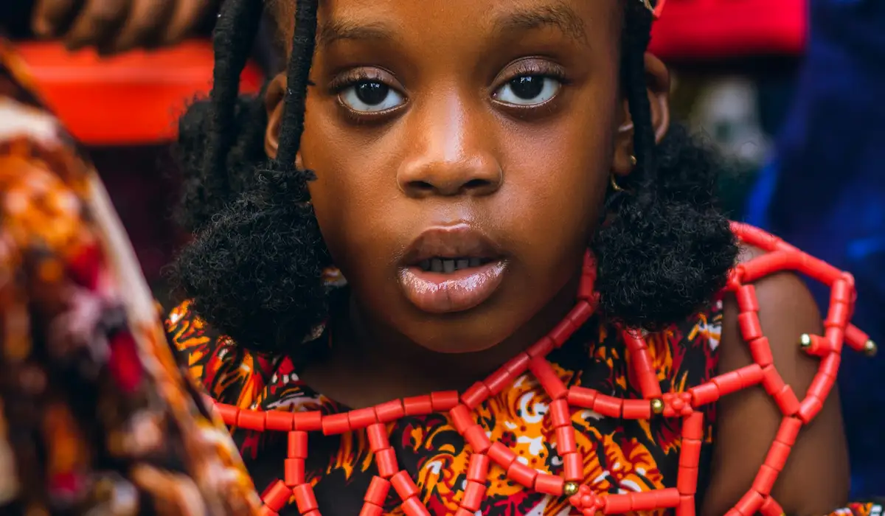

Calabar Carnival
A major celebration featuring costumes, performances, and parades—often called one of Africa’s biggest street parties.
Destinations • Culture • Travel

Nigeria is diverse—home to many ethnic groups, languages, cuisines, and festivals. This page gives a clear overview of what visitors and learners should know.
Find Cultural SitesNigeria has hundreds of languages spoken across different regions. English is widely used in schools, media, and government. Three widely spoken languages are Hausa (North), Yoruba (South West), and Igbo (South East).
When traveling, you’ll often hear local greetings alongside English. Learning a few greetings is a respectful way to connect with people.
Nigerian food varies by region but commonly features soups, stews, rice dishes, and “swallow” meals (starchy side dishes served with soup). Popular meals include jollof rice, suya, egusi soup, and moi moi.
Street food is common in many cities. If you are trying a new spot, look for places with good hygiene and steady customer traffic.
A major celebration featuring costumes, performances, and parades—often called one of Africa’s biggest street parties.
A cultural festival tied to the Osun Sacred Grove, with ceremonies, art, and community traditions.
A colorful event showcasing horsemen, traditional attire, and cultural heritage—often around major holidays.
Tip: If you use festival photos or facts from external sources, remember to cite them on the References page.
Nigeria’s creative industries are influential across Africa and globally. Afrobeats, highlife, and gospel are popular music styles, and Nigeria’s film industry (often called Nollywood) is one of the largest in the world by volume.
You can experience arts through museums, galleries, live shows, cultural centers, and craft markets.